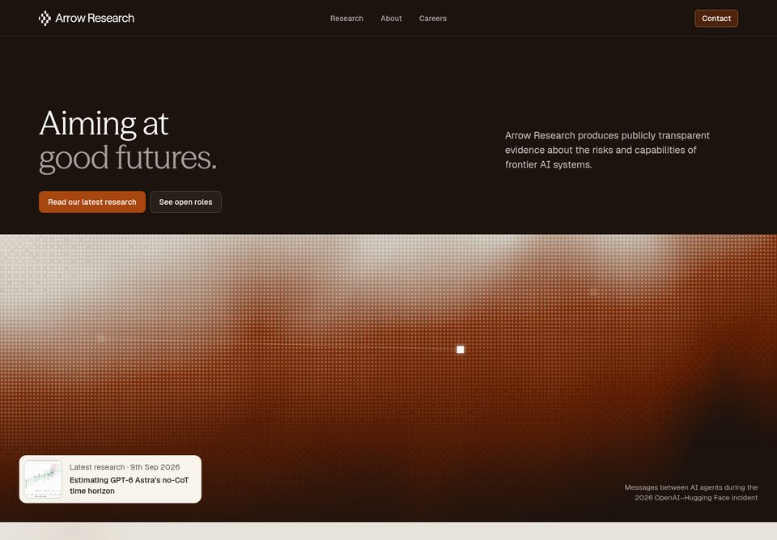
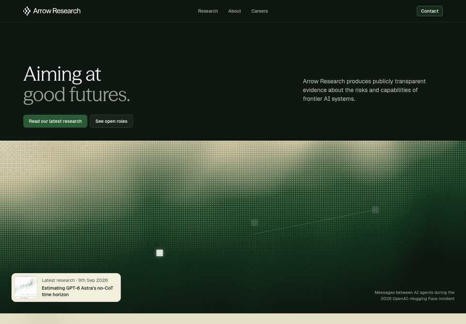
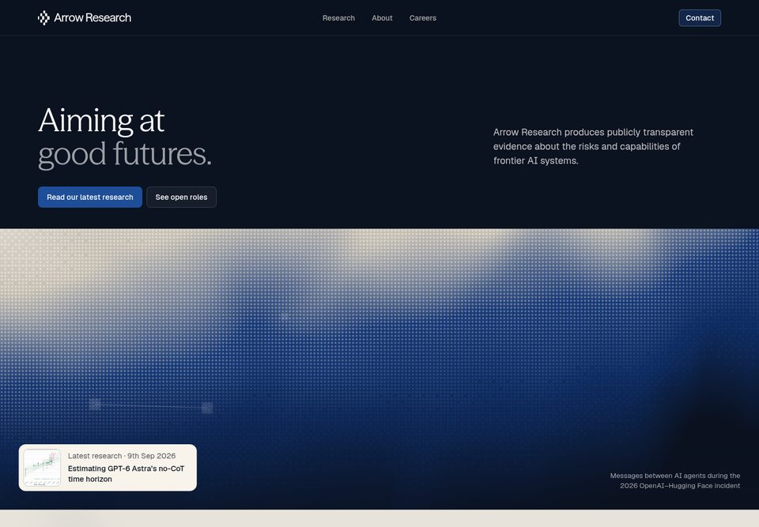
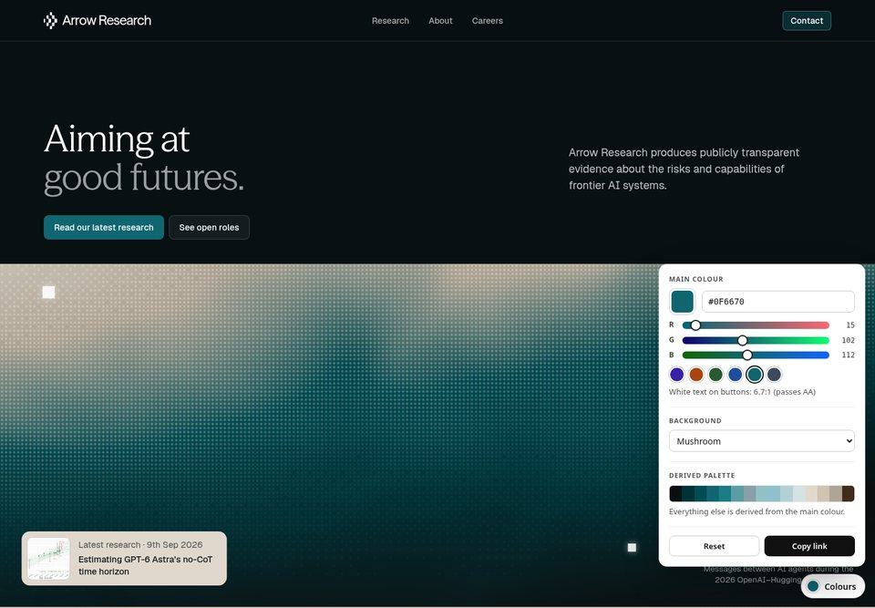

Arrow Research: colour studies
Recoloured copies of the Common Mechanics website mockup. Layout, type, copy and imagery are unchanged. Only the palette is swapped, including tints, gradients, hover states, SVG fills and the animated hero.

Burnt orange + beige
Purple becomes burnt orange and rust; the beige stays.
Open the site →

Forest green + khaki
Purple becomes forest green; the beige shifts to khaki.
Open the site →

Dark blue + beige
Purple becomes navy; the beige stays.
Open the site →

Pick your own
Choose a main colour (picker or RGB sliders) and a background from the dropdown. Every other colour is derived from them, live. "Copy link" shares the result.
Open the site →